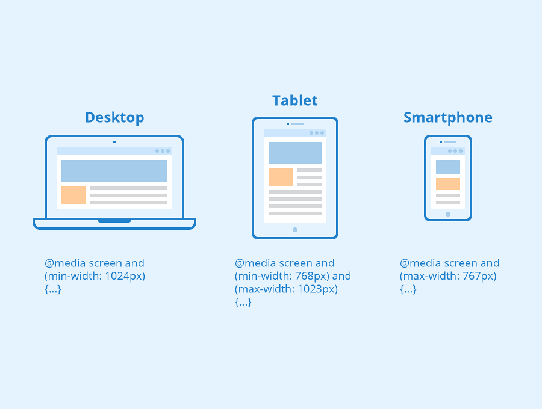
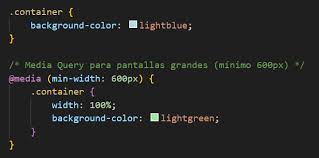

es una función de CSS3 que permite aplicar estilos específicos a un sitio web solo cuando se cumplen ciertas condiciones sobre el dispositivo o el entorno, como el ancho de la pantalla, la resolución o el tipo de medio. Son fundamentales para el diseño web responsivo, ya que posibilitan que una página se adapte automáticamente a diferentes tamaños de pantalla, desde móviles hasta computadoras de escritorio.
all: Se aplica a todos los dispositivos (es el valor por defecto si no se especifica). screen: Diseñado para dispositivos con pantalla, como monitores, tablets y smartphones. Es el más común para diseño web responsive. print: Para la visualización en documentos impresos o en la vista previa de impresión. speech: Utilizado por lectores de pantalla para personas con discapacidades visuales, quienes escuchan el contenido en lugar de verlo.
Existen diferentes tipos de breakpoints según su uso y funcionalidad:
1. Breakpoint Estándar Es el tipo más común. Se coloca en una línea específica del código y la ejecución se detiene cuando el programa llega a esa línea. Ejemplo en Python con un breakpoint manual: x = 10 y = 5 breakpoint() # Se detiene aquí para inspección total = x + y print(total)
2. Breakpoint Condicional Solo detiene la ejecución si se cumple una condición específica. Ejemplo en JavaScript con DevTools: for (let i = 0; i < 10; i++) { if (i === 5) { debugger; // Se detiene solo cuando i es 5 } console.log(i); }
3. Breakpoint de Excepción Detiene la ejecución cuando ocurre una excepción o error en el programa. Ejemplo en Python: def dividir(a, b): return a / b try: resultado = dividir(10, 0) # Error de división por cero except ZeroDivisionError: breakpoint() # Se detiene aquí para analizar el error
4. Breakpoint de Cambio de Variable Detiene la ejecución cuando el valor de una variable cambia. Ejemplo en C++ con gdb: int main() { int x = 0; x = 5; // Se puede configurar un breakpoint aquí si x cambia return 0; }
